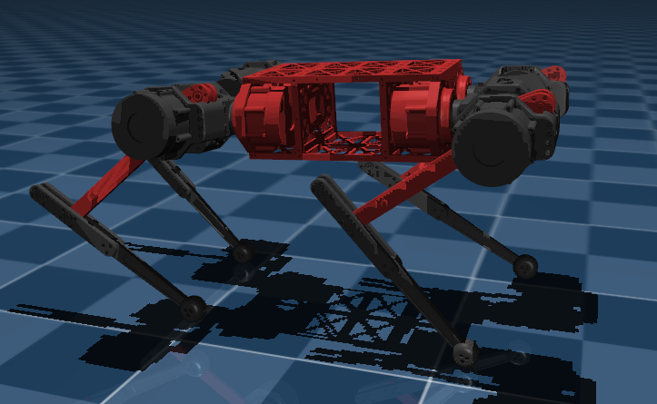

Design
Graduate Researcher, DGIST
Jinsong Hong
I study force-aware contact control for legged robots, combining dynamics-based low-level control, observer-based estimation, and sim-to-real learning.
Affiliation
DGIST
Focus
Legged locomotion and sim-to-real control
GitHub
github.com/jinsong-hong
Research Focus
Force-aware contact control for legged robots.
My research focuses on how legged robots can handle contact through force-aware control and learning. I am especially interested in observer-based contact estimation, admittance/impedance interfaces, and dynamics-based low-level control for robust locomotion.
- Force-aware contact control for legged locomotion
- Observer-based estimation of contact force and disturbance
- Admittance and impedance control for physical interaction
- Sim-to-real learning with dynamics-based low-level control
- Robustness evaluation under contact, delay, and external disturbance
Legged Robotics
Force Control
Contact Dynamics
Sim-to-Real
Reinforcement Learning
Model Predictive Control
Observer
Admittance Control
Impedance Control
System Identification
Simulation
Programming
Capabilities
Design, identify, simulate, and deploy legged robot systems.
I work across mechanism design, frequency-domain system identification, force-aware control, simulation, programming, and hardware integration.
System ID
Frequency-Domain Robot Modeling
Control
Dynamics-Based Learning Control
Programming
Robot Experiment Programming
Control and Learning
Force-Aware Contact Control

Simulation
Simulation
Physics simulation for controller validation, system modeling, and sim-to-real workflows.
Programming
Programming for Robot Experiments
Research Directions
What I am building toward
Observer-Based Contact Estimation
Using observer-based estimates to expose contact force, disturbance, and unmodeled dynamics to low-level controllers and learned policies.
Control-Aware Sim-to-Real RL
Studying how action space, actuator model, delay, domain randomization, and safety layers affect hardware transfer.
Compliant Physical Interaction
Comparing position-target policies, torque-level policies, impedance control, and admittance control under matched disturbance tests.
Selected Work
Projects
A compact overview of my current work. Detailed figures, design analysis, and media are collected on the project page.
Main Project
Observer-Aware Sim-to-Real Locomotion
Combining dynamics-based low-level control with learned locomotion policies for robust hardware transfer.
DetailsMechanical Design
Parallel-Link Quadruped Robot Design
Designing structural components for a parallel-link quadruped robot, including actuator housings, link structures, and load-bearing interfaces verified through finite element analysis.
Design galleryModeling
Frequency-Domain System Identification
Identifying leg dynamics, actuator inertia, damping, and system delay for model-aware sim-to-real control.
ID videosHardware Control
Parallel-Link Legged Robot Control
Developing a control pipeline for a parallel-link legged robot with actuator-aware validation.
Experiment mediaObserver-Based Control
Observer-Based Contact Robustness Layer
Exploring how observer-based force and disturbance estimates can serve as a structured interface between model-based feedback and learned locomotion policies.
Manuscript directionPublications
Papers and manuscripts
In preparation
Observer-Based Robust Low-Level Control for Legged Sim-to-Real Transfer
Jinsong Hong and collaborators
Manuscript in progress
In progress
Disturbance-Robust Policy Interface for Contact-Rich Locomotion
Jinsong Hong and collaborators
Research project
Accepted papers, preprints, videos, and code links can be added here as they become public.
Contact